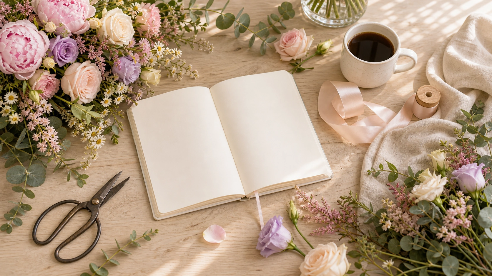
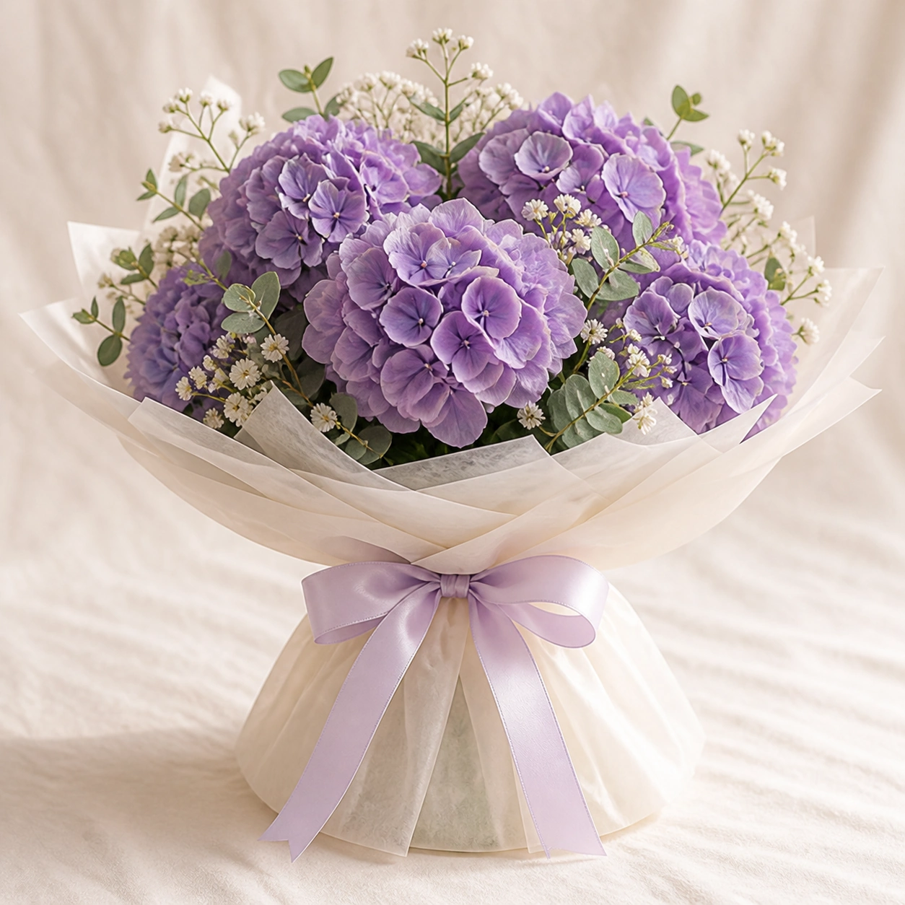

Какие цветы выбирать весной
Пионы, тюльпаны, ранункулюсы и нежные миксы: чем они отличаются и для каких поводов подходят.
Блог
Короткие материалы от флористов Lumi Fleur: какие цветы выбрать по сезону, как продлить жизнь букета и как собрать подарок без случайных деталей.

Материалы
Статьи помогают покупателю быстрее выбрать композицию и правильно ухаживать за ней после доставки.
Пионы, тюльпаны, ранункулюсы и нежные миксы: чем они отличаются и для каких поводов подходят.

Открытка, упаковка, цвет ленты и доставка к точному времени делают вручение более личным.

Чистая вода, свежий срез, прохладное место и правильная ваза заметно продлевают жизнь цветов.
Подборка флориста
Иногда лучший букет получается не из фиксированного набора, а из свежей поставки дня. Флорист сохраняет палитру и настроение, но выбирает самые сильные стебли.